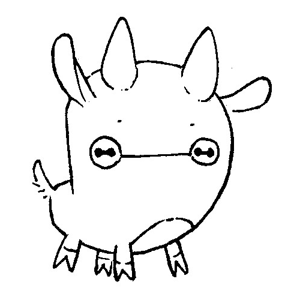
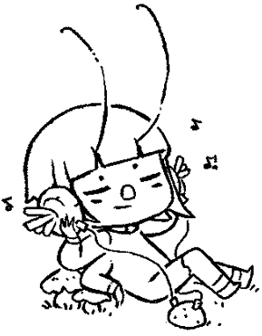

Uxn is the virtual machine powering the Hundred Rabbits software.
This one-page computer, programmable in Uxntal, is an implementation-first portability layer with a focus on hosting graphical tools and games. It lives at the heart of the Varvara ecosystem.
This wiki along with most of the audio-visual projects documented on it are running on Uxn.
Memory
Uxn utilizes two circular stacks of bytes, the return stack allows it to tunnel through 128 subroutines and find its way back. It can interface with up to 16 peripherals, such as screens, controllers, or even other Uxns. Each instance has its own stack and device memory, but share a common 64kb of addressable working memory. Uxn has no undefined behaviors. Any sequence of bytes is a valid program, no operations can trigger errors.
| Shared | Memory | RAM | Data | 64kb pages |
|---|---|---|---|---|
| Private | Stacks | Working Stack | Data | 256 bytes |
| Pointer | 1 byte | |||
| Return Stack | Data | 256 bytes | ||
| Pointer | 1 byte | |||
| IO | Devices | Data | 256 bytes |
Basic Emulator
Here is an implementation of a basic Uxn emulator in 150 lines of C which includes the Console device and passes the opcode tests.
cc uxnmin.c -o uxnmin view raw
Basic Assembler
Here is a self-hosted implementation of the assembler in 400 lines of Uxntal, capable of assembling itself.
cat uxnasm.tal | uxncli uxnasm.bin > uxnasm-bootstrap.rom view raw
Here is the 1.4kb binary data of the assembler above, alternatively, a new one can be created with uxnasm.c.
xxd -r -p uxnasm.rom uxnasm.tal view raw
Software is bootstrappable when it does not depend on a binary seed that cannot be built from source. Software that is not bootstrappable, even if it is free software, is a serious security risk. The goal is to start from a minimal, easily inspectable binary which should be readable as source and bootstrap into a practical user interface.
Stack-machines are ideal candidates for this scale of personal computing as one can comfortably write programs directly in assembly to tackle most computation projects without having to rely on higher-level languages.
Original illustrations created
by Rekka Bellum.

- Official Site
- Run in Browser
- Communities: Mailing List • Forum • irc.libera.chat #uxn
- Social: Discord • Github

17P04— Uxn Specification Frozen15B13— Uxn is born!
incoming dexe tools forth macintosh ufx format ulz format drifblim drifblim varvara playdate oscean devine lu linvega uxn devlog hundred rabbits